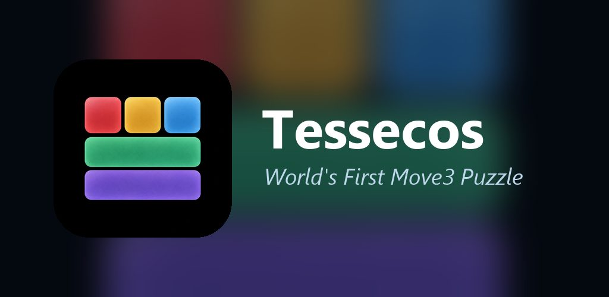

INDEPENDENT GAME STUDIO · 独立游戏工作室
Tessecos Studio
我们制作安静、清晰、可以离线游玩的益智游戏。工作室的名字来自我们的第一款游戏 Tessecos / 归序。
We make calm, clear puzzle games you can play offline. The studio is named after our first game, Tessecos.
我们的游戏 / Our games
点击卡片查看详情 · Tap a card for details
Tessecos / 归序
World's First Move3 Puzzle
移动同色棋子组，把每一横行整理成同一种颜色。100 个关卡，两种难度，八套外观。
Move matching groups until every row holds one color. 100 levels, two modes, eight styles.

Fewest Pop / 最少先爆
Tap the fewest fruit
水果缓缓落下，点击屏幕上数量最少的那一种。五种技能水果，越玩越快。
Fruit drifts down. Tap the kind there are fewest of, with five skill fruit to unlock.
联系我们 / Contact
开发团队：Tessecos Studio（独立开发团队）
Developer: Tessecos Studio (independent team)
邮箱 / Email：tessecos@gmail.com